by Min Tang1 , Tongtong Wang1 , Zhongyuan Liu1 , Ruofeng Tong1 , and Dinesh Manocha2
1 - Zhejiang University, China
2 - University of Maryland at College Park, USA

Benchmarks: Benchmarks: Our novel GPU-based collision handling algorithm is used to simulate complex cloth with irregular shape and multiple layers at 2−8fps on an NVIDIA GeForce GTX 1080. We observe 7−10X speedup over prior algorithms.
Abstract
We present an incremental collision handling algorithm for GPU-based interactive cloth simulation.
Our approach exploits the spatial and temporal coherence between successive iterations of an
optimization-based solver for collision response computation. We present an incremental continuous
collision detection algorithm that keeps track of deforming vertices and combine it with spatial hashing.
We use a non-linear GPU-based impact zone solver to resolve the penetrations. We combine our collision
handling algorithm with implicit integration to use large time steps. Our overall algorithm, I-Cloth,
can simulate complex cloth deformation with a few hundred thousand vertices at 2-8 frames per second
on a commodity GPU. We highlight its performance on different benchmarks and observe up to
7-10X speedup over prior algorithms.
Gallary
| lady-dress-1 | lady-dress-2 | lady-dress-3 |
| 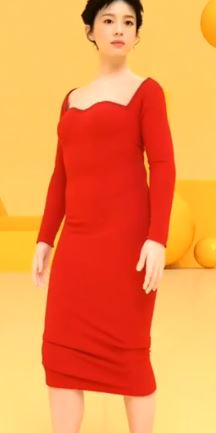 | 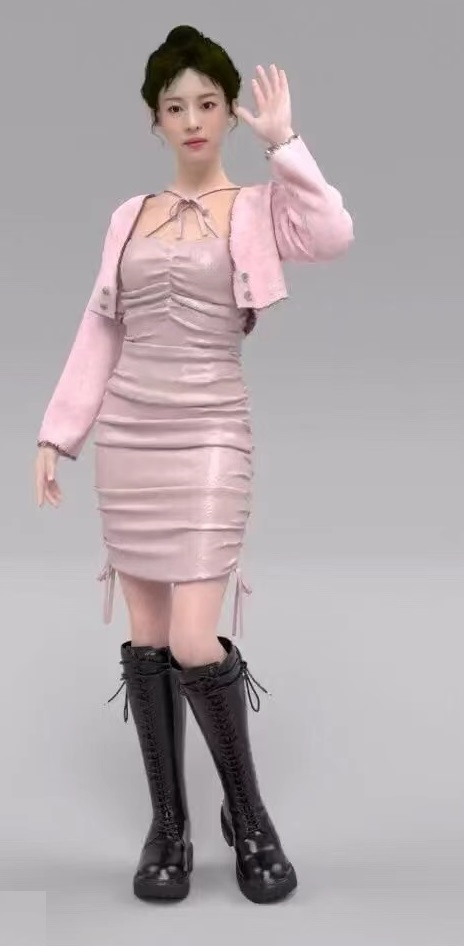 | 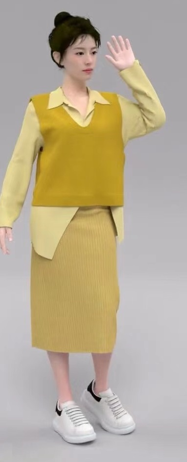 |
| lady-dress-4 | lady-dress-5 | lady-dress-6 |
 |
 |
|
| lady-dress-7 | lady-dress-8 | lady-dress-9 |
| 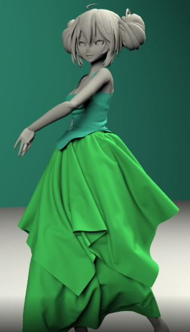 |  |
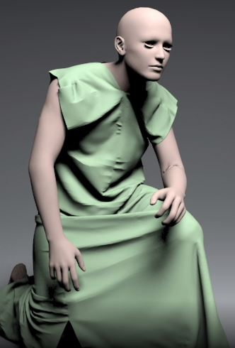 |
| Kimu with Skirts | Hip-Hop Dancer | Kneeled |
| 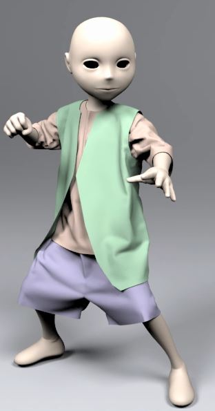 | 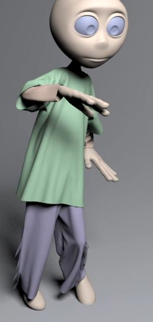 | 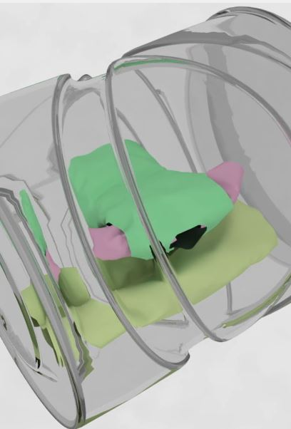 |
| Kungfu Boy | Dancing Boy | Dryer |
| 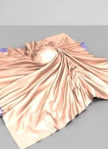 | 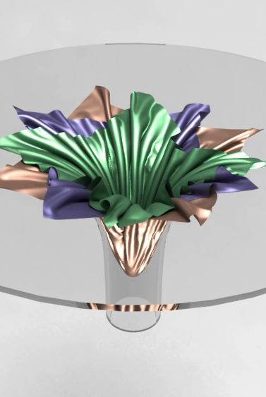 | 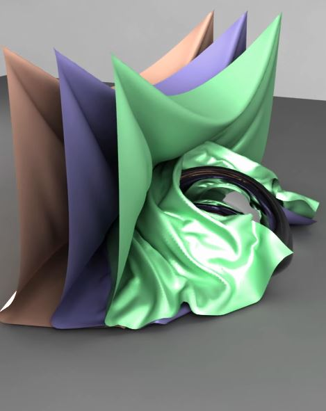 |
| Twisting Sphere | Funnel | Moving Sphere |
| 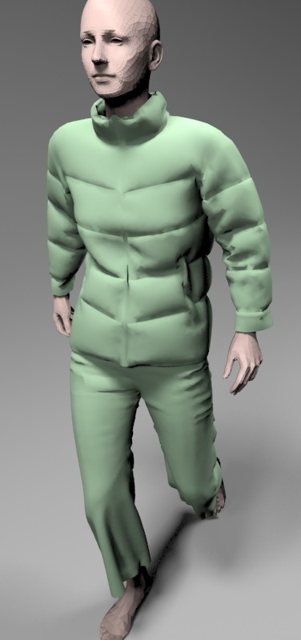 | 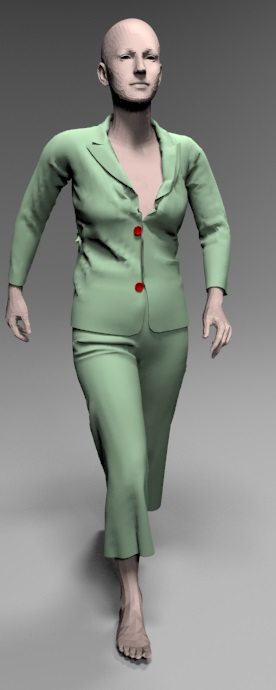 | 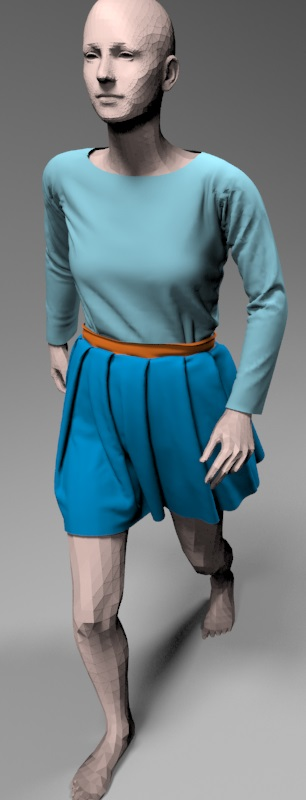 |
| Down Coat | Suit with Buttons | Walking Lady |
| 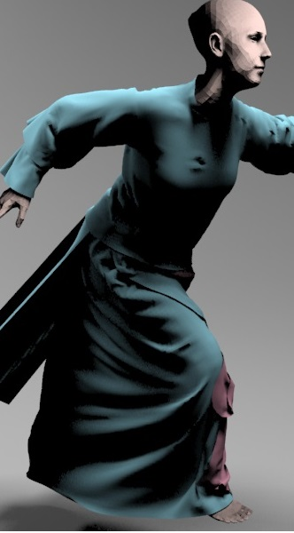 |  |
 |
| Jumping with Skirts | Walking with Skirts | Different Materials |
| 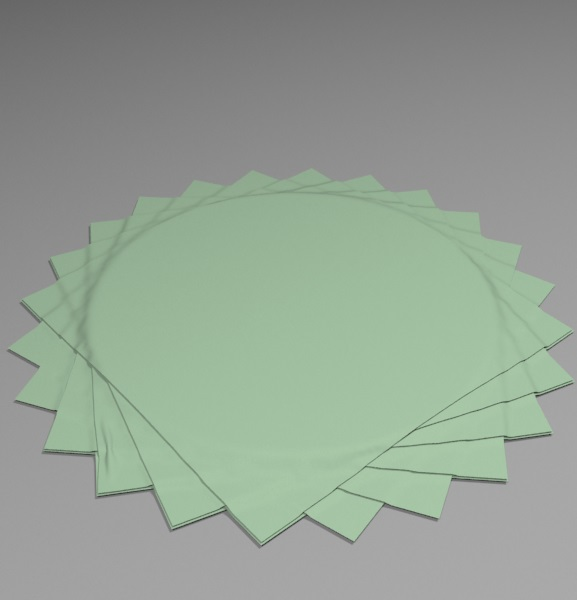 | 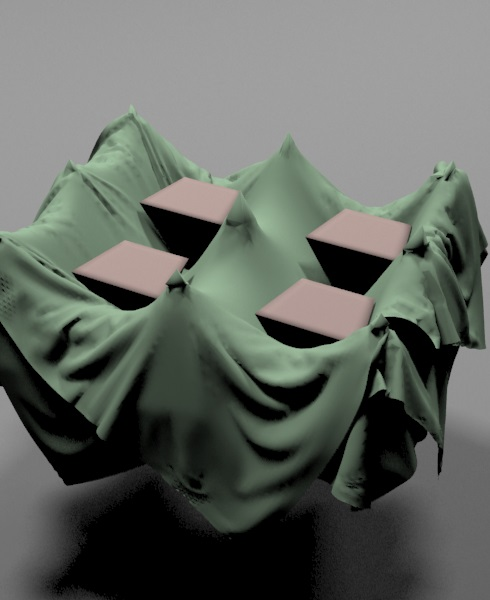 | |
| Stack with 10 layers | Needle bed |
Contents
Paper (PDF 3.01 MB) Supplemetary Material (PDF 2.87 MB) Video (43.2 MB) Source Code
Min Tang, Tongtong Wang, Zhongyuan Liu, Ruofeng Tong, and Dinesh Manocha, I-Cloth: Incremental Collision Handling for GPU-Based Interactive Cloth Simulation, ACM Transactions on Graphics, 37(6), Article 204 (November 2018), 10 pages (Proc. of ACM SIGGRAPH Asia), 2018.
@article{siga18,
author = {Tang, Min and Wang, Tongtong and Liu, Zhongyuan and Tong, Ruofeng and Manocha, Dinesh},
title = {{I-Cloth}: Incremental Collision Handling for {GPU}-Based Interactive Cloth Simulation},
journal = {ACM Transaction on Graphics (Proceedings of SIGGRAPH Asia)},
volume = {37},
number = {6},
pages = {204:1--10},
month = {November},
year = {2018},
}
Related Links
I-Cloth: Incremental Collision Handling for GPU-Based Interactive Cloth Simulation
PSCC: Parallel Self-Collision Culling with Spatial Hashing on GPUs
I-Cloth: API for fast and reliable cloth simulation with CUDA
Efficient BVH-based Collision Detection Scheme with Ordering and Restructuring
MCCD: Multi-Core Collision Detection between Deformable Models using Front-Based Decomposition
TightCCD: Efficient and Robust Continuous Collision Detection using Tight Error Bounds
Fast and Exact Continuous Collision Detection with Bernstein Sign Classification
A GPU-based Streaming Algorithm for High-Resolution Cloth Simulation
UNC dynamic model benchmark repository
Collision-Streams: Fast GPU-based Collision Detection for Deformable Models
Fast Continuous Collision Detection using Deforming Non-Penetration Filters
Fast Collision Detection for Deformable Models using Representative-Triangles
DeformCD: Collision Detection between Deforming Objects
Self-CCD: Continuous Collision Detection for Deforming Objects
Interactive Collision Detection between Deformable Models using Chromatic Decomposition
Fast Proximity Computation Among Deformable Models using Discrete Voronoi Diagrams
CULLIDE: Interactive Collision Detection between Complex Models using Graphics Hardware
RCULLIDE: Fast and Reliable Collision Culling using Graphics Processors
Quick-CULLIDE: Efficient Inter- and Intra-Object Collision Culling using Graphics Hardware
Acknowledgements
This research is supported in part by NSFC (61732015, 61572423, 61572424, 61832016), the National Key R&D Program of China (2017YFB1002703), the Science and Technology Project of Zhejiang Province (2018C01080), and Zhejiang Provincial NSFC (LZ16F020003). Dinesh Manocha is supported in part by NSF Grant 1547106 and Intel. We would like to thank Xiaorui Chen for helping on the benchmarks, and the reviewers’ constructive feedback and suggestions.